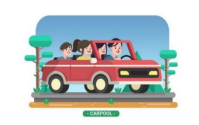

Le covoiturage, c’est le fait de partager sa voiture avec d’autres personnes qui vont dans la même direction. Ce n’est pas un service de transport professionnel : le conducteur ne fait pas de bénéfice, il partage seulement les frais du trajet, comme l’essence ou les péages. Ce mode de déplacement connaît un grand succès en France. Les routes sont often pleines, le carburant coûte cher et les transports publics ne couvrent pas toujours toutes les zones. Dans ce contexte, le covoiturage apparaît comme une solution économique, écologique et solidaire. Il permet de rouler moins cher, de rencontrer du monde et de réduire la pollution.
Beaucoup de gens racontent leurs expériences positives. Par exemple, Antoine, un étudiant de Nantes, dit qu’il a découvert cette pratique grâce à une application mobile : « J’ai tout de suite aimé l’ambiance dans la voiture. On discute, on écoute de la musique, et le trajet paraît plus court. » Pour lui, le covoiturage est une manière agréable de faire des rencontres tout en économisant de l’argent. D’autres apprécient surtout le côté écologique : en remplissant une seule voiture

au lieu de trois, on émet beaucoup moins de CO₂. Selon le ministère de la Transition écologique, chaque année, plusieurs millions de trajets sont réalisés ainsi, ce qui prouve que cette habitude entre vraiment dans le quotidien des Français.
Mais il ne faut pas oublier les petits inconvénients. Parfois, les horaires ne sont pas respectés ou les trajets changent au dernier moment. Il arrive aussi qu’on ne s’entende pas avec les autres passagers. Certaines personnes préfèrent conduire seules, par confort ou par besoin d’intimité. Pourtant, malgré ces petits problèmes, le covoiturage reste une solution moderne et responsable. Il montre qu’on peut changer nos habitudes de transport sans perdre notre liberté. Voyager ensemble, c’est aussi apprendre à partager, à faire confiance et à penser un peu plus à la planète.